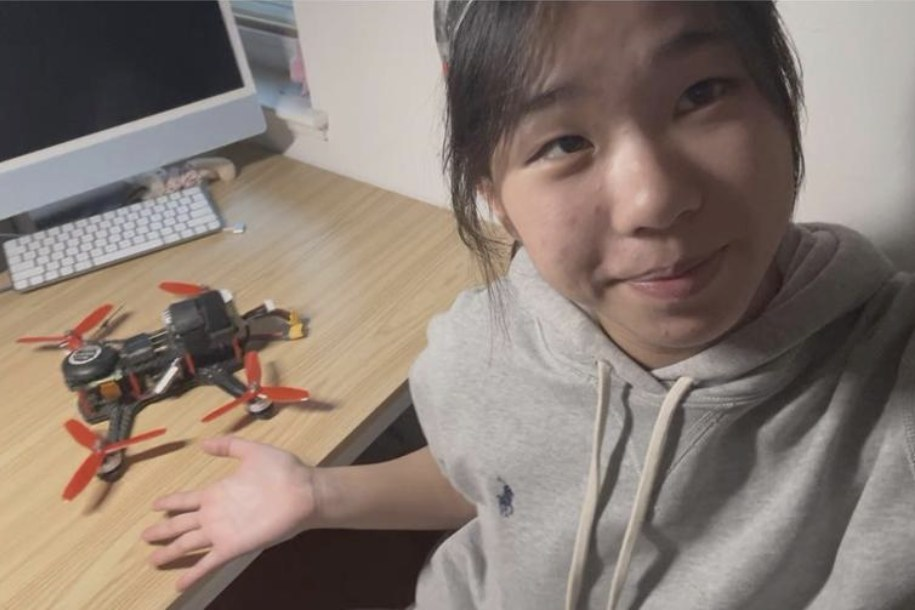
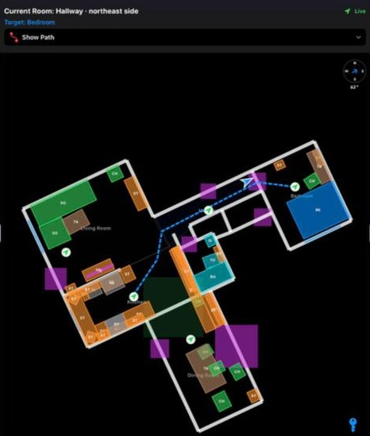
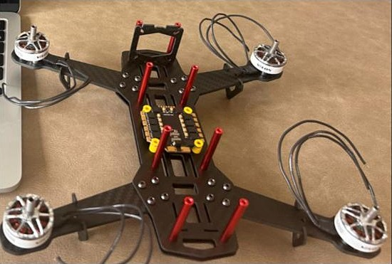
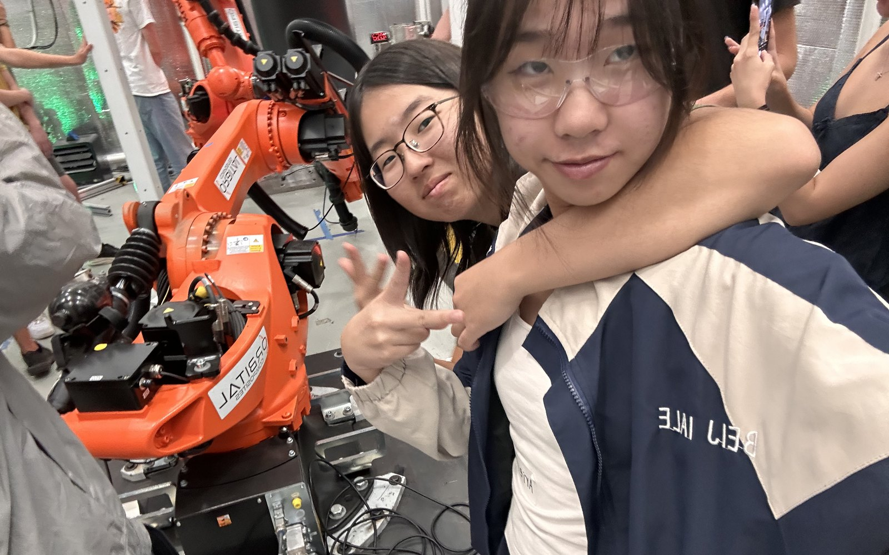

Autonomous RoboCar
Camera and LIDAR line and car following. Tuned the PID distance control.

I build machines that see, and point them at problems people live with.

A phone camera on a walker that guides visually impaired seniors through their own homes

A drone I built alone that spots trees from the air and suggests what to plant

All-girls VEX team, 5 to 14 members

Single-axis control demonstrator
"Two months ago, these students had a walker that could see. Today, it can guide."
Autonomous RoboCar
Camera and LIDAR line and car following. Tuned the PID distance control.
Hidden-data detector
Trained a model to find data hidden inside images. Built an ML + quantum attack detector (99%+ accuracy) and reported to the CTO.

District coding competition and Code Nights

12-hour school hackathon
My first childhood memory is getting electrocuted, so I swore off electricity for life. Until second grade I lived in Tainan, next door to NanYi Electronics, and I speed walked past it with my head down. This summer I walked in with a parts list. By the end of the week the owners knew me as the girl building a drone from scratch.
My grandfather left school after elementary, taught himself trigonometry by asking everyone around him, and built his own machinery company. His motto was "What I don't know, I'll ask anyone until I do." I spent hours in his factory under machines twenty feet tall. When he passed away, I helped close it down, and promised myself I'd keep building something of my own.
I used to be too shy to raise my hand in class. This summer, a drone flew over my backyard and I followed its buzz through unfamiliar streets until I found the pilot, so I could ask him how he did it.

Mobile Walker on the App Store
Public release, then partnerships with stores like Walmart and Target so visually impaired seniors can shop on their own.
Locust detection
Teach the drone to spot locust swarms before they reach crops, for farms in Africa.